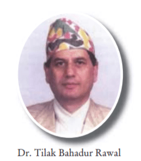

Biography:
Tilak Bahadur Rawal was the 12th governor of Nepal.He was the governor
from Jan 31, 2000 to August 28, 2000 during the ruling period
of King Gyanendra.Signatue of Tilak Bahadur Rawal can be seen on the
currency of Rs 5, Rs 10, Rs 20, Rs 50, Rs 100, Rs 500 & Rs 1000. For the
first time Polymer of Rs 10 was issued.